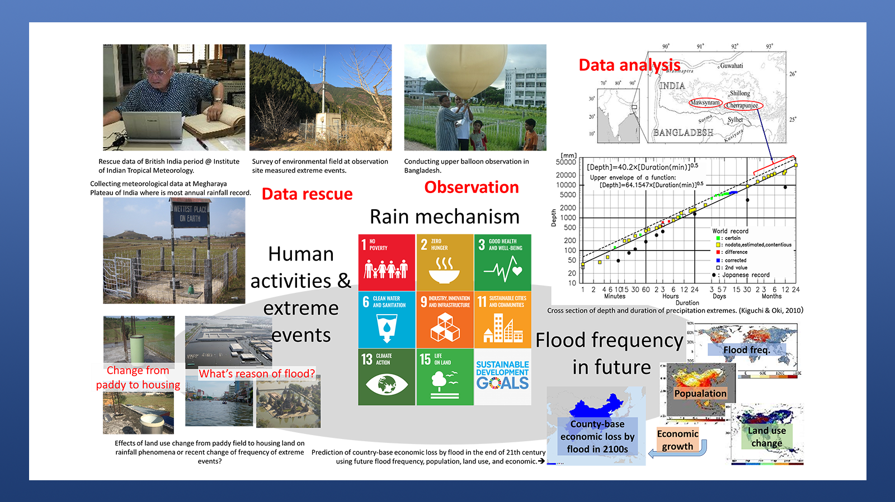
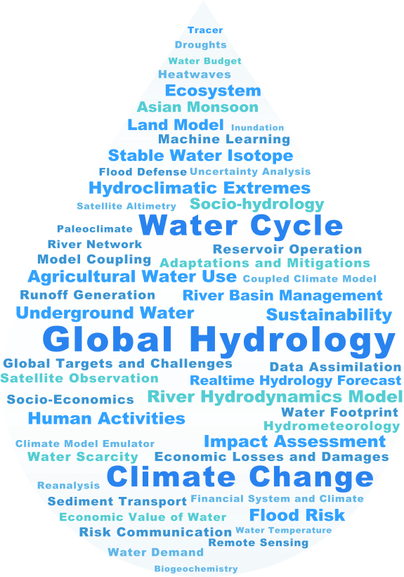

UTokyo Global Hydrology Group
UTokyo Global Hydrology Group (GHG) is an innovative research platform at the University of Tokyo, dealing with diverse aspects of hydrological science across various spatiotemporal scales from local to global.
As an interdisciplinary research group working across multiple organizations within the University of Tokyo, we are dedicated to engaging in extensive research and education related to the global water cycle.
Our Mission
Our mission is "To contribute to the earth and society through the development and inheritance of the science of water."
Understanding the water on Earth, an essential resource for both the natural environment and human society, is crucial to addressing various water-related issues such as climate change, floods, and droughts. We are conducting cutting-edge research on the interactions between the water cycle, water resources, and human activities to achieve the mission.
Member


How to Join?
Global Hydrology Group is based on three campuses of the University of Tokyo: Oki Laboratory in Hongo, Yoshimura Laboratory in Kashiwa, and the Yamazaki Laboratory in Komaba. Each laboratory has different procedures for participation. For more information, please refer to the respective laboratory's webpage.
Isotope Hydrometeorology, Yoshimura Lab (Kashiwa)
The Yoshimura Laboratory is at the Kashiwa Campus of the University of Tokyo. The laboratory contributes to the understanding of the water cycle system, climate prediction, and the prevention of water-related disasters. Our main approaches are ground-based and satellite observations and water cycle modeling, and data assimilation that integrates the two. In particular, we have achieved world-leading results in global water cycle research using water isotopic ratio information and in the development of terrestrial models for Earth system models. In recent years, we have also d ealt with a wide range of topics such as weather prediction using machine learning and paleoclimate reconstructions.
Global Hydrodynamics, Yamazaki Lab (Komaba)
Yamazaki lab focus on the movement and storage of the surface and sub-surface waters at multiple temporal and special scales from local to global, including rivers, lakes, wetland, groundwater, and their interactions with biogeochemistry and climate change. We extensively use modelling, remote sensing, and data integration approaches to cover the entire globe. We are a world-leading lab for global-scale surface water modelling and monitoring with many members and visitors from all over the world.
Human Geo-Science Lab (HGSL), Oki Lab (Hongo)
HGSL lab conducts research for a comprehensive understanding of the fundamental principles of nature and human society. To pass on and disseminate the study of water to society, we are engaged in research on river hydrology, global water cycle system science, and solutions to water problems. Our studies also include various disciplines such as social science, economics, and psychology to conduct a wide range of research that contributes significantly to society, is useful and meaningful in the long term, and contributes to the establishment of a new academic system. HGSL lab is inclusive of diverse human resources and provides exposure to the world's most advanced research and development in a variety of fields.
Lab Activities
Our primary research tools are numerical simulations and data analysis, while we do lots of other research activities such as visiting fields and hosting workshops.

Field Trip to Water Diversion Channel @ Shizuoka

Feild Trip to Triple Water Wheel @ Fukuoka

Field Survey @Tateyama

Farewell for New Graduates

Guest Seminar by a Visiting Professor

Presentation at an International Conference

Exhibition @ Komaba Festival

Seminar with Digital Earth Sphere @ Kashiwa

Research Life @ Komaba

Meisuikai (Alumni Reunion)

Joint Workshop @ Kobe University
Research Interests
We are working on extensive areas of hydrological research across various spatiotemporal scales from local to global.

Monitoring of global hydrological budget
Where and how much water exists on the earth in what form, and how does it change seasonally and over the long term? We analyze global hydrological budgets by observations and data analysis.

Modelling of global hydrological process
What process governs the change and variation of global hydrological cycle? What are the impacts of human activity and climate change on global hydrological cycle? We reveal the mechanism of global hydrological cycle through modeling hydrological processes.

Prediction of global hydrological states
Can we monitor changes in the global water cycle? Can we reconstruct past climates and predict the future? We will reveal the actual state of the global water cycle through simulations and data integration approaches.

Global Hydrology and Society
How is the global hydrological cycle related to the climate system and human society? How can we build a sustainable society? We explore solutions to address global challenges.
Research Topics

Real-time hydrological prediction
We developed a land water circulation simulation called "Today's Earth (TE)" in collaboration with JAXA. This system distributes and visualizes essential water-related data for human society (ex., river flow, and soil moisture content) and is utilized for disaster monitoring and hydrological research purposes.

Global River Hydrodynamics Model
The global hydrodynamics model CaMa-Flood developed by our laboratory achieves high-precision and high-efficiency flood simulations on a global scale through subgrid terrain representation and identification of realistic terrain parameters.

Water crisys risk analysis
We identify areas where water crises are a concern using a global hydrological cycle simulation that also considers human activities and an integrated analysis of socio-economic information, and estimate their future changes by taking into account both climate change and social change.

Climate change impact on flood risk
We are working on estimating future flood risks considering climate change by combining highly accurate climate, terrestrial, and river models. The achievements of our laboratory are being referenced and utilized in various fields such as the IPCC and international financial networks and play an important role in evaluating the impact of climate change worldwide.

Water Isotope for hydrological studies
The stable water isotopes (H216O, H218O and HD16O) are tracers of climate processes in hydrological cycle. They are widely used to reconstruct past climate variations or to better understand the mechanisms that control the transport of water vapor caused by different weather patterns.

Monitoring terrestrial water cycle from space
We are using hydrological information obtained from Earth observation satellites to understand changes in terrestrial water conditions. We have also developed novel techniques of river bathymetry parameter extraction and data assimilation into the global water dynamics model based on satellite-observed river water levels, contributing to improving the accuracy of river flood simulations.

Data assimilation for global hydrological cycle
Data assimilation is widely used in both atmospheric
prediction and climate reconstruction because it is an effective method to
combine model forecasts and various types of meteorological observations.
• Isotope Reanalysis
• Historical weather reconstruction by diary data assimilation
• Climate reconstruction over the last millennium by data assimilation using
proxies

High-precision global hydro-geography map
We are developing highly accurate and high-resolution global terrain data based on advanced big data processing technology. The developed high-resolution terrain data is not only used for flood simulation but also used as basic data in various research institutions in the field of earth sciences worldwide.

Socio Hydrology
Combining various methods such as fieldwork and statistical analysis, we are working to quantitatively elucidate the relationship between rivers and society. We propose policies that lead to climate change adaptation and disaster prevention, including watershed flood control.

Leading Land Model Development
Land Model is a crucial and complex component in climate model. in order to handle this complexity, we developed the Integrated Land Simulator (ILS), which combines multiple land element models into a general-purpose coupling system. By coupling ILS with atmospheric and oceanic circulation models to improve the overall accuracy.

Machine learning approach for precipitation
Developed a machine learning method that estimates local precipitation by recognizing precipitation patterns affected by weather systems and topography. It has the potential for better water resource management and response to hazards. Also, we are developing downscaling and short-term rainfall prediction methods.

Monsoon Climate & its Variability’s Impact on Society
Focusing on the monsoon circulation with an important role on the global water cycle, we study that hydro-meteorological phenomena such as rainfall from the viewpoint of climatology and hydrology. To make clear a impact on society by its variability through the research on monsoon variation provides the scientific knowledge for the issues how should society cope or which kind of policy is effective.

Global hydrology and water resources
Using various models and data, we analyze global hydrological cycle and budget (where is water, how much is it, and how is it flowing?), and discuss how it relates to water resources and water disasters. A review paper on the global water cycle and water resources was published in Science in 2006 (Oki and Kanae, 2006).
